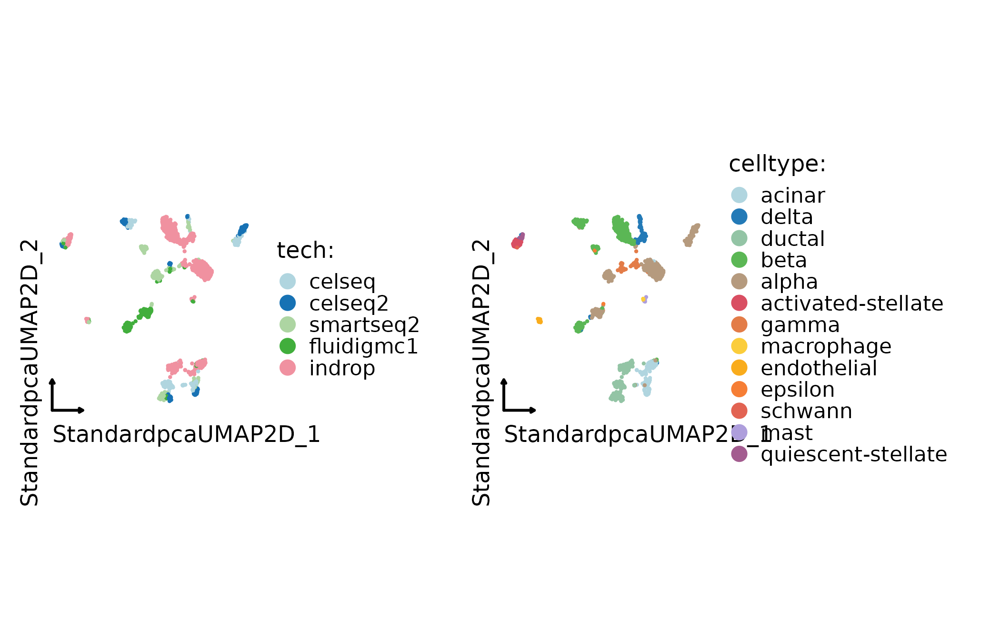
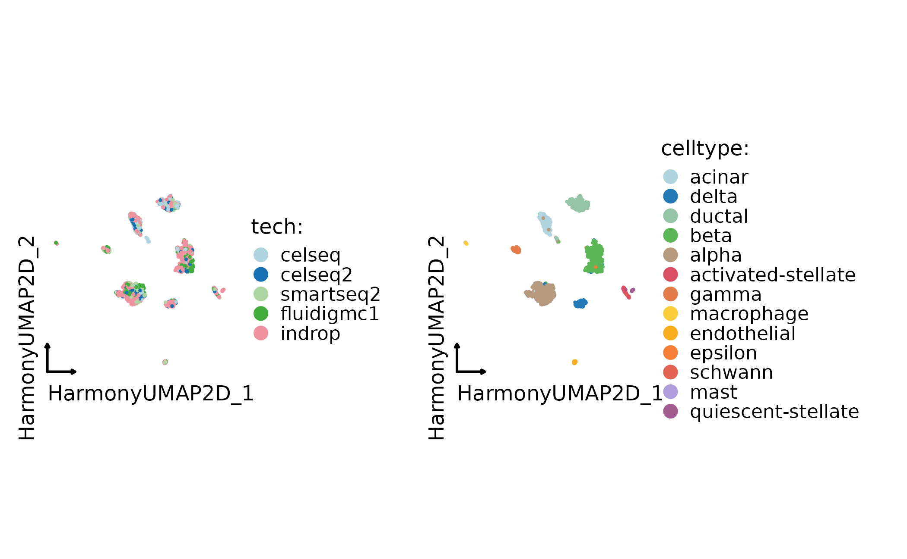
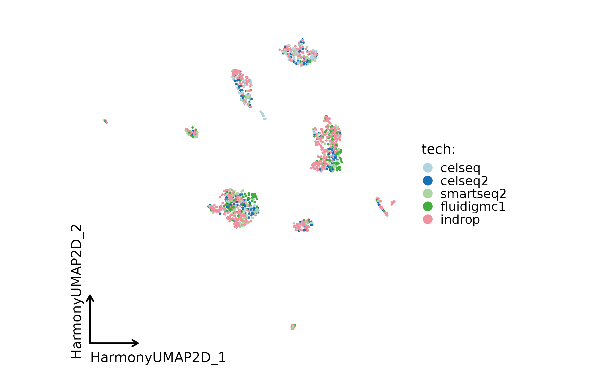
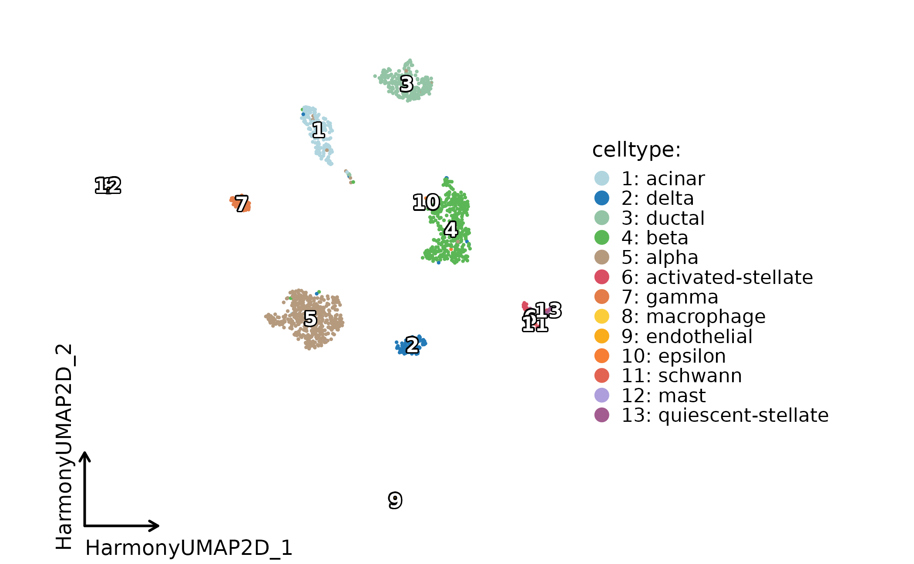
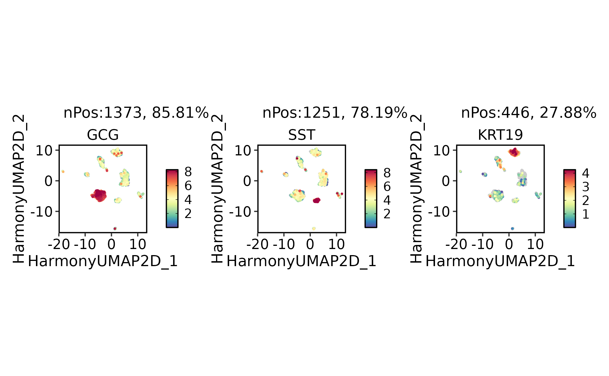

This article shows how to run and inspect dataset integration in
scop. Integration should be used when technical batches,
platforms, donors, or experiments obscure the biological structure that
should be compared across datasets.
RunIntegration() provides a common entry point for
several integration methods. The key practical decisions are the batch
column, the integration method, the reduction names to inspect, and
whether the integrated structure preserves known biology.
Integration is not a required step for every dataset. Use it when technical structure prevents comparison across samples or platforms. Keep an unintegrated baseline so the report can show what changed after correction.
Prepare a Merged Object
The example uses the bundled panc8_sub object, a subset
of human pancreas datasets. The tech column records the
batch or technology label. The celltype column is used as
known biology for diagnostics, not as a target to force during
integration.
library(scop)
#> ⬢ . ⬡ ⬢ .
#> _____ _________ ____
#> / ___// ___/ __ ./ __ .
#> (__ )/ /__/ /_/ / /_/ /
#> /____/ .___/.____/ .___/
#> /_/
#> ⬢ . ⬡ . ⬢
#> ------------------------------------------------------------
#> Version: 0.9.0 (2026-08-02 update)
#> Website: https://mengxu98.github.io/scop/
#>
#> Python environment initialization is disabled
#> To enable it, set: options(scop_env_init = TRUE)
#>
#> The message can be suppressed by:
#> suppressPackageStartupMessages(library(scop))
#> or options(log_message.verbose = FALSE)
#> ------------------------------------------------------------
data(panc8_sub)
table(panc8_sub$tech)
#>
#> celseq celseq2 fluidigmc1 indrop smartseq2
#> 200 200 200 800 200
table(panc8_sub$celltype)
#>
#> acinar activated-stellate alpha beta
#> 174 44 488 439
#> delta ductal endothelial epsilon
#> 97 230 34 2
#> gamma macrophage mast quiescent-stellate
#> 67 6 5 13
#> schwann
#> 1Always inspect the unintegrated embedding or PCA first. This gives you a baseline for deciding whether integration removes technical structure without erasing cell-type structure.
panc8_sub <- RunStandardWorkflow(panc8_sub, verbose = FALSE)
#> ℹ [2026-08-02 14:12:49] Skip `log1p()` because `layer = data` is not "counts"
CellDimPlot(
panc8_sub,
group.by = c("tech", "celltype"),
reduction = "UMAP",
theme_use = "theme_blank"
)
Run an Integration Method
Harmony is a common first pass when the object is already a merged Seurat object with a batch column.
panc8_harmony <- RunIntegration(
srt_merge = panc8_sub,
batch = "tech",
integration_methods = "Harmony"
)
#> ◌ [2026-08-02 14:12:53] Run integration workflow...
#> ℹ [2026-08-02 14:12:55] Split `srt_merge` into `srt_list` by "tech"
#> ℹ [2026-08-02 14:12:56] Checking a list of <Seurat>...
#> ℹ [2026-08-02 14:12:56] Data 1/5 of the `srt_list` has been log-normalized
#> ℹ [2026-08-02 14:12:56] Perform `FindVariableFeatures()` on 1/5 of `srt_list`...
#> ℹ [2026-08-02 14:12:57] Data 2/5 of the `srt_list` has been log-normalized
#> ℹ [2026-08-02 14:12:57] Perform `FindVariableFeatures()` on 2/5 of `srt_list`...
#> ℹ [2026-08-02 14:12:57] Data 3/5 of the `srt_list` has been log-normalized
#> ℹ [2026-08-02 14:12:57] Perform `FindVariableFeatures()` on 3/5 of `srt_list`...
#> ℹ [2026-08-02 14:12:57] Data 4/5 of the `srt_list` has been log-normalized
#> ℹ [2026-08-02 14:12:57] Perform `FindVariableFeatures()` on 4/5 of `srt_list`...
#> ℹ [2026-08-02 14:12:57] Data 5/5 of the `srt_list` has been log-normalized
#> ℹ [2026-08-02 14:12:57] Perform `FindVariableFeatures()` on 5/5 of `srt_list`...
#> ℹ [2026-08-02 14:12:58] Use the separate HVF from `srt_list`
#> ℹ [2026-08-02 14:12:58] Number of available HVF: 2000
#> ℹ [2026-08-02 14:12:58] Finished check
#> ℹ [2026-08-02 14:12:58] Perform `Seurat::ScaleData()`
#> ℹ [2026-08-02 14:12:59] Perform linear dimension reduction("pca")
#> ! [2026-08-02 14:12:59] Some PCA features are absent from scale.data and will be dropped: "G0S2", "MRC2", "COL18A1", "COL5A3", "NOTCH3", "CRLF1", "PTGR1", "IL11", "NREP", "PDLIM3", "ENG", "AQP3", "SEMA7A", "LIF", "SNAI2", "TFPI2", "PECAM1", "H19", …, "CASP6", and "TMC6"
#> ℹ [2026-08-02 14:12:59] Perform Harmony integration
#> ℹ [2026-08-02 14:12:59] Using "Harmonypca" (1:23) as input
#> ℹ [2026-08-02 14:12:59] Adjust neighbor k from 20 to 20 for small-sample clustering
#> ℹ [2026-08-02 14:13:00] Perform `Seurat::FindClusters()` with "louvain"
#> ℹ [2026-08-02 14:13:00] Reorder clusters...
#> ℹ [2026-08-02 14:13:00] Skip `log1p()` because `layer = data` is not "counts"
#> ℹ [2026-08-02 14:13:00] Perform umap nonlinear dimension reduction using Harmony (1:23)
#> ℹ [2026-08-02 14:13:03] Perform umap nonlinear dimension reduction using Harmony (1:23)
#> ℹ [2026-08-02 14:13:05] Perform umap nonlinear dimension reduction using Harmonypca (1:23)
#> ✔ [2026-08-02 14:13:08] Harmony integration completed
SeuratObject::Reductions(panc8_harmony)
#> [1] "Standardpca" "StandardpcaUMAP2D" "StandardUMAP2D"
#> [4] "Harmonypca" "Harmony" "HarmonyUMAP2D"
#> [7] "HarmonyUMAP3D" "HarmonypcaUMAP2D"Use the method-specific integrated UMAP for plotting. The exact
reduction name depends on the selected method; for Harmony, the examples
use HarmonyUMAP. When comparing methods, report the
reduction name explicitly. A plot labeled only as UMAP is ambiguous once
an object contains uncorrected and integrated embeddings.
CellDimPlot(
panc8_harmony,
group.by = c("tech", "celltype"),
reduction = "HarmonyUMAP",
theme_use = "theme_blank"
)
Choose a Method
Use method choice to match the data and dependency budget:
-
Harmony,fastMNN,MNN,ComBat, andSeuratmethods are practical R-side choices for many scRNA-seq batch problems. -
scVI,BBKNN,Scanorama,GLUE, andMultiMAPrequire Python-side dependencies but can be useful for large datasets or multimodal settings. -
WNNand cross-modality methods are better suited to multimodal RNA + ATAC or paired-modality objects than to ordinary batch correction. -
Uncorrectedis useful as a baseline and should be kept in reports when showing that integration changed the object.
panc8_uncorrected <- RunIntegration(
srt_merge = panc8_harmony,
batch = "tech",
integration_methods = "Uncorrected",
verbose = FALSE
)
#> ℹ [2026-08-02 14:13:11] Checking a list of <Seurat>...
#> ℹ [2026-08-02 14:13:11] Data 1/5 of the `srt_list` has been log-normalized
#> ℹ [2026-08-02 14:13:11] Perform `FindVariableFeatures()` on 1/5 of `srt_list`...
#> ℹ [2026-08-02 14:13:11] Data 2/5 of the `srt_list` has been log-normalized
#> ℹ [2026-08-02 14:13:11] Perform `FindVariableFeatures()` on 2/5 of `srt_list`...
#> ℹ [2026-08-02 14:13:12] Data 3/5 of the `srt_list` has been log-normalized
#> ℹ [2026-08-02 14:13:12] Perform `FindVariableFeatures()` on 3/5 of `srt_list`...
#> ℹ [2026-08-02 14:13:12] Data 4/5 of the `srt_list` has been log-normalized
#> ℹ [2026-08-02 14:13:12] Perform `FindVariableFeatures()` on 4/5 of `srt_list`...
#> ℹ [2026-08-02 14:13:12] Data 5/5 of the `srt_list` has been log-normalized
#> ℹ [2026-08-02 14:13:12] Perform `FindVariableFeatures()` on 5/5 of `srt_list`...
#> ℹ [2026-08-02 14:13:12] Use the separate HVF from `srt_list`
#> ℹ [2026-08-02 14:13:13] Number of available HVF: 2000
#> ℹ [2026-08-02 14:13:13] Finished check
#> ℹ [2026-08-02 14:13:13] Perform Uncorrected integration
#> ℹ [2026-08-02 14:13:14] Reorder clusters...
#> ℹ [2026-08-02 14:13:14] Skip `log1p()` because `layer = data` is not "counts"Other methods follow the same entry-point pattern, but may require additional runtime dependencies or matrix backends:
panc8_rpca <- RunIntegration(
srt_merge = panc8_sub,
batch = "tech",
integration_methods = "RPCA"
)
panc8_fastmnn <- RunIntegration(
srt_merge = panc8_sub,
batch = "tech",
integration_methods = "fastMNN"
)Inspect Integration Quality
Do not judge integration from batch mixing alone. Also check known labels, marker genes, and whether rare cell types remain separated.
CellDimPlot(
panc8_harmony,
group.by = "tech",
reduction = "HarmonyUMAP",
theme_use = "theme_blank"
)
CellDimPlot(
panc8_harmony,
group.by = "celltype",
reduction = "HarmonyUMAP",
label = TRUE,
theme_use = "theme_blank"
)
FeatureDimPlot(
panc8_harmony,
features = c("INS", "GCG", "SST", "KRT19"),
reduction = "HarmonyUMAP"
)
#> ! [2026-08-02 14:13:23] "INS" are not in the features of <Seurat>
When comparing methods, keep the input object fixed and compare the same metadata labels, marker genes, and diagnostic plots across methods. The unintegrated baseline is useful because it shows what the integration changed. Good integration mixes batches within the same biological state while keeping distinct cell types and marker programs separated. Overcorrection is visible when expected marker-defined groups collapse together.
What to Report
A compact integration report should include:
- the batch column and biological annotation columns used for evaluation;
- the integration method and major parameters;
- the integrated reduction names used for plots;
- before and after plots colored by batch and biological labels;
- marker-gene checks for expected cell types;
- any method-specific dependencies or environment setup needed to reproduce the run.
Integration is a preprocessing decision, not a biological result by itself. Use it only when the integrated representation improves downstream interpretation without hiding real biological differences.